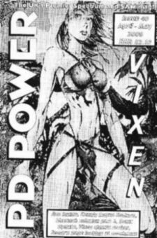

|
|  |
Arriving in a size just small enough to fit in your coat pocket, PD Power is one of the more established Speccy fanzines, specs of grey hair and all. Although it’s black and white, the text is of an admirable quality (though the pictures tend to suffer) and the layout clear (if not without a few bugs… er… undocumented features, such as “finish the paragraph because we forgot to print it”). It also feels to be a good weight for £2.10, and there are a fair variety of articles on offer.
There’s a tech zone for the more, well, technical-minded of you which kicks off the features. In the issue we had (number 40, April-May 2000), these ranged from DTP to an interview with Dennis Hayes (of modem fame), and there was even a tips section, something of a rarity in fanzines but welcome nonetheless. The reviews were rather scarce (though we at YS3 can talk!), and the one that we did read talked a fair amount about the game in question without really touching the heart of the software. The look at emulators across the formats was interesting, especially for those who are interested in the emulation scene in general, and Linda B’s page was as glorious as any page she ever wrote for Your Sinclair. And she even said that she loved us at the end! Sigh… ahem. There was also a fair bit of news, but a glance across the touted six pages brings to light a serious shortcoming of the fanzine: its tendency to “lift” stuff from other people (naughty rip-offery not implied). The software previews were little more than prints of the sites, for example, and many of the other articles there were merely cut and pasted into its pages from their true homes. What about PD Power, eh, lads? What do you think? As a whole, the fanzine is perfectly readable without ever becoming inspired, and hence leaves one with a rather dry after-taste. It’s alright, and provides a good summary for those who can’t get online themselves, but ultimately lacks the spark… the je-ne-sais-quoi… that extra something that turns it from a competent read into engaging journalism. There’s nothing wrong with it per se, but nothing leaps off the pages and grabs you by the scruff of the neck yelling “Pay attention to me! Read me! Read me NOW!” either. But for sheer professionalism, PD Power can't be faulted. |
|
Last Page - Next Page
Contents |